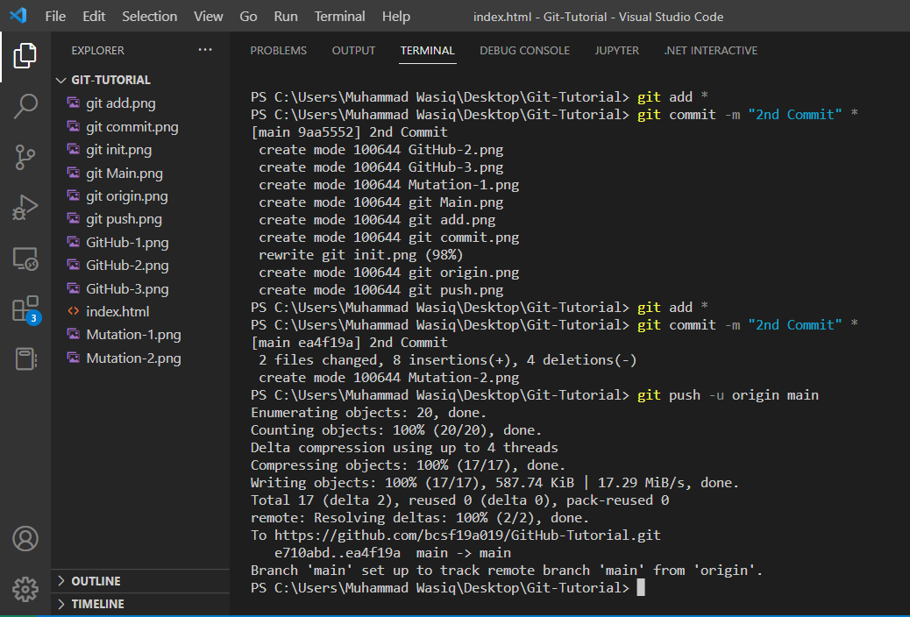
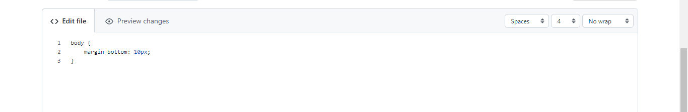
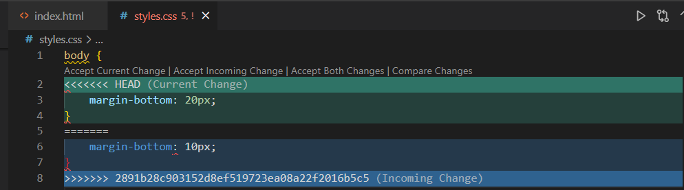

I created a index.html File. Than to make a local repository I have to initialize it by using following command:
git init
After initializing the local repository We have to Stage our files and for this the following command is used:
git add *
After staging the files to local repository. We have to commit the changes. This is done by following command:
git commit -m "Commiting Changes" *
In order to cread a GitHub Repository:
To Store our Repository on GitHub we have to add a origin. This is done by following command:
git remote add origin https://github.com/bcsf19a019/GitHub-Tutorial.gitAbove link will vary from repository to repository

Before Pushing data to the GitHub repository we have to make the main Branch. This is done by the following command:
git branch -M main
After making Main branch we have to push the data on the GitHub. This is done by the following command:
git push -u origin main
Whenever changes are made in a file or new files are added or some files are deleted they have to be added, cmmitted and pushed again. Otherwise the changes made to the file are not made in repository
For Example Some Changes are made in my index.html file and some png images are added to file after last Commit. So I have to add, commit and then push it to Repository.
Before Adding, Commiting and Pushing. The changes made in index.html are not made in GitHub Repository as shown in figure below:
Afeter Adding, Commiting and Pushing. The changes are made in index.html file and new .png files are added in GitHub Repository as shown in figure below:
We can Clone a Repository using git by the following command:
git clone https://github.com/bcsf19a019/GitHub-Tutorial.gitThe Link varies from Repository to Repository.

To fetch and download content from a remote repository and immediately update the local repository to match that content we use the following command:
git pull https://github.com/bcsf19a019/GitHub-Tutorial.gitThe Link varies from Repository to Repository.

Git branches are effectively a pointer to a snapshot of our changes.
To make a new Branch following command is used:
git branch b1Here, the last parameter is Branch name.
To List all Branches following command is used:
git branchTo change Branch we are working on following command is used:
git checkout b1Here, the last parameter is Branch name.

Now After checking out to b1. I made some Changes to that branch now inorder to merge them following command is used:
git merge b1
To show a list of all the commits made to a repository the following command is used:
git log
A merge conflict is an event that takes place when Git is unable to automatically resolve differences in code between two commits. Git can merge the changes automatically only if the commits are on different lines or branches.
I made a change in styles.css on git website then I made a change in styles.css in local repository and when I tried to pull a merge conflict occured and then I resolved it.
 We can check the status of the repository at any stage. For this the following command is used:
git status